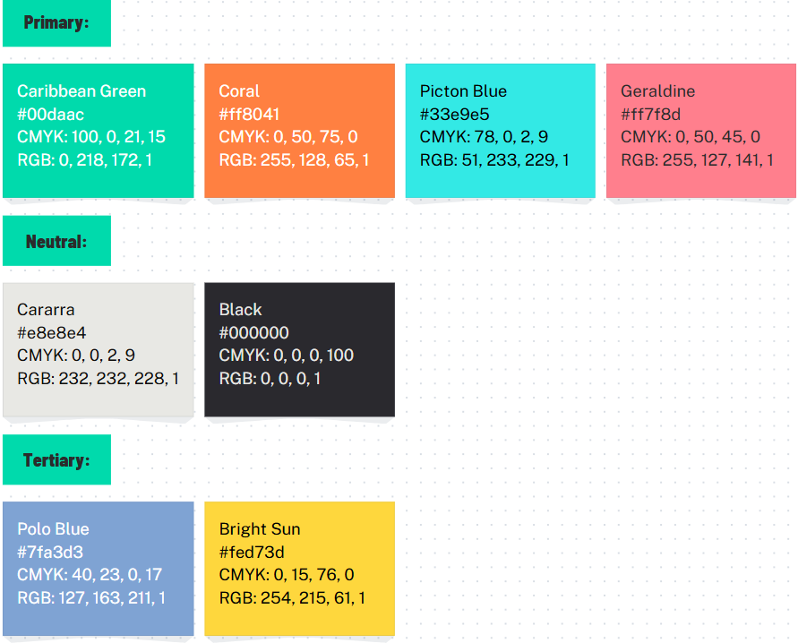

Goal Alignment: A place where all my work is in one place, for me to be organized, for users to easily navigate through my art and form their opinion on me based on what I put out onto the internet.
Information Structure: Folder Structure is for each page, and for the internal storage for the website.
User Flow:

Navigation bar will be a permanent feature on all pages, even the in depth ones. All images in the portfolio will be clickable to enlarge it. On the in depth pages will be a back button to return to the main section page. The buttons will be responsive to the mouse, thus they will swell when hovered over and darken when clicked. If you're already on the page, the button will lighten to indicate you're already there. I don't know what use I'll have for icons since everything is labelled (other than for the footer), but maybe I could put the icons next to the labels in case there's a language barrier. The style will then definitely be a black outline for them so they stand out against the colourful everything else. I like the fonts Bradley Hand ITC for headings and Baskerville for the body. They feel like they fit with the retro-ish aesthetic I'm going for.
The colours I chose:
Buttons will be rectangles with rounded edges. Wireframes was in week 2, but I'll link them here I did make a flow chart for interactions a few weeks ago: